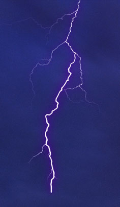
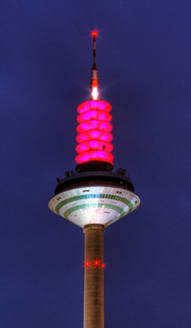

Planung & Ausführung
Elektroinstallation
Neubauinstallationen, Sanierungen, Renovierungen, Instandsetzungen und Reparaturen mit CAD-gestützter Planung.
- Neubau
- Sanierung
- Renovierung
- Reparatur
Elektrofachbetrieb in Mainz-Gonsenheim
Friedrich Drehwald-Balz steht für Elektroinstallation, Sicherheitsprüfung, Telekommunikation und strukturierte EDV-Verkabelung im Raum Mainz.
4,2 / 5Google-Bewertung
5Rezensionen
MainzGonsenheim
Mo-Frfür Sie erreichbar
Fachbetrieb mit klarer Haltung
Ob Modernisierung eines Hauses, Neuinstallation im Zuge einer Sanierung oder Prüfung bestehender Anlagen: Der erste Schritt ist eine verständliche Einschätzung der Aufgabe. Danach folgen eine saubere Planung, fachgerechte Umsetzung und nachvollziehbare Dokumentation.
Die neue Website führt Besucher schneller zu den passenden Leistungen, zeigt echte Kontaktdaten sofort sichtbar und verzichtet bewusst auf Tracking, eingebettete Drittanbieter und unnötige Ladezeiten.
Leistungen
Die bestehenden Kernleistungen bleiben erhalten und werden für Besucher klarer, hochwertiger und entscheidungsfreundlicher dargestellt.
Neubauinstallationen, Sanierungen, Renovierungen, Instandsetzungen und Reparaturen mit CAD-gestützter Planung.

Sicherheitsprüfungen elektrischer Anlagen inklusive Prüf- und Messbericht, Teilanlagenprüfung und Abschlussprotokoll.
Lieferung, fachgerechte Installation und Konfiguration von Telekommunikationsanlagen nach Herstellervorgaben.

Strukturierte Verkabelung nach aktuellen Standards mit abschließender Prüfung und Messprotokoll.
Ablauf
Telefonisch oder per E-Mail wird besprochen, worum es geht und welche Dringlichkeit besteht.
Bei Bedarf werden Bestand, Leitungswege, Sicherheit und technische Anforderungen geprüft.
Die Arbeiten erfolgen strukturiert, nachvollziehbar und mit Blick auf Sicherheit und Alltagstauglichkeit.
Prüfungen, Messwerte und relevante Ergebnisse werden verständlich festgehalten.
Kundenstimmen
Die vorhandenen Bewertungen betonen besonders zuverlässige Ausführung, freundliche Monteure und schnelle Hilfe.
“Die Arbeiten werden immer sauber und zu höchster Zufriedenheit durchgeführt.”
“Schnelle Hilfe, kurze Arbeitszeit und guter Service.”
Kontakt
Friedrich Drehwald-Balz Elektrounternehmen ist in Mainz-Gonsenheim erreichbar. Für Anfahrt, Reparatur, Prüfung oder Planung bitte direkt telefonisch oder per E-Mail Kontakt aufnehmen.